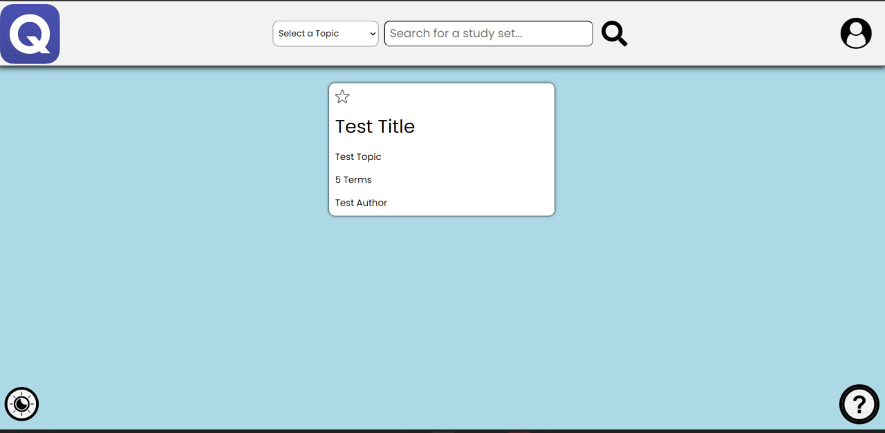

Welcome to Quizzy! Quizzy is a website where you can create and study study sets. A study set is a collection of cards. Each card has a front and a back part. To study a study set, you can study the cards in the study set. To study a card, you will be shown the question. You can then click on the answer button to see the answer. You can also click on the next button to go to the next card. You can also click on the previous button to go to the previous card. You can also click on the flip button to flip the card. You can also click on the shuffle button to shuffle the cards. You can also click on the repeat button to repeat the current card. You can also click on the repeat all button to repeat all of the cards. You can also click on the stop button to stop repeating the cards. You can also click on the settings button to change the settings. You can also click on the help button to view help information. You can also click on the leaderboard to view the leaderboard. You can also click on the logout button to logout.
The home page is where you can search for study sets based on the topic and keyword in the description, and et cetera. Then, click the search bar or just press Enter. Then, you will be able to see sets, which contain information like the user who created that set , topic of the set and how many terms are inside the set. You will be taken to a page where you can view the study sets that match your search. To view a study set, click on the study set you want to view. You can locate to help page with the help button on the bottom right corner, and you can toggle the theme with the theme button on the bottom left corner. You can favorite a set by clicking on the star button, which you can later view on my favorites page.
In this page, the user can view the sets that they have created, which contains information like the user who created that set, how many terms are inside the set, and if they are favorited by the user. You can favorite a set by clicking on the star button, which you can later view on my favorites page.
In this page, the user can view the sets that they have favorited, which contains information like the user who created that set, how many terms are inside the set. You can unfavorite a set by clicking on the star button, which you cannot later view on my favorites page.

To create a study set, you can click on the profile dropdown and navigate to "create a set" option, which brings you to a page where you can create a study set. You can create as many flashcards as you'd like by clicking on the add button, or remove them. In order to create a set, you have to specify the title, topic, front and back parts of the flashcards. Once you are done, you can click on the save button. You will earn 20 points for creating a set.
To view a study set, click on the study set you want to view. You will be taken to a page where you can view the study set's each individual card. You will also have the option to flip the card to see the other side, you can click on the arrows to locate to other flashcards in the set. You can click on the test button to test yourself with the set. If you scroll down, there is a comment section where you can comment on the set by different users
To test yourself with a study set, click on the test button on the view page. You will be taken to a page where you can test yourself with the study set. It will be true-false questions, which are randomized. After submitting the test, you can view your answers to see if you got them right. You will earn points for every correct answer you have gotten.

In this page, you can change your password or avatar. Each of these is an indivudal form, so you don't have to submit both to save the changes.
The leaderboard is where you can view the users with their respective points. To view the leaderboard, click on the leaderboard button on the profile dropdown. You will be taken to a page where you can view the leaderboard table, which contains information about the rank (1: gold, 2: silver, 3: bronze and so on), the username, and how many points they have gathered.